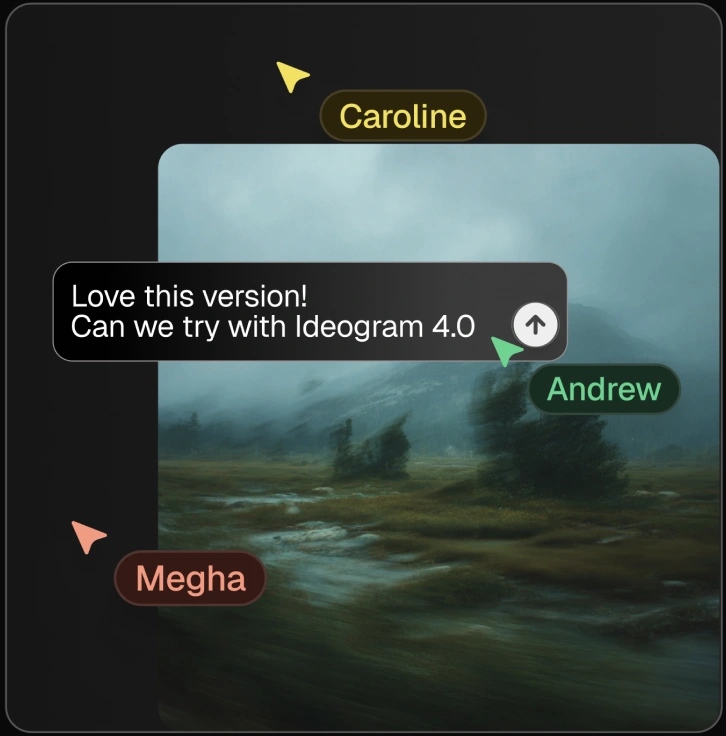
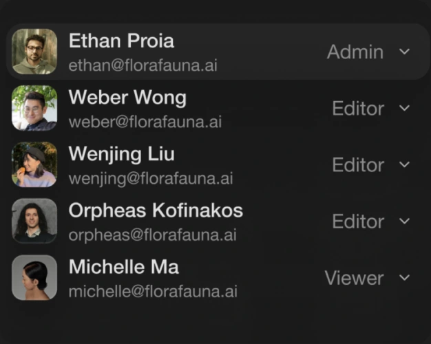
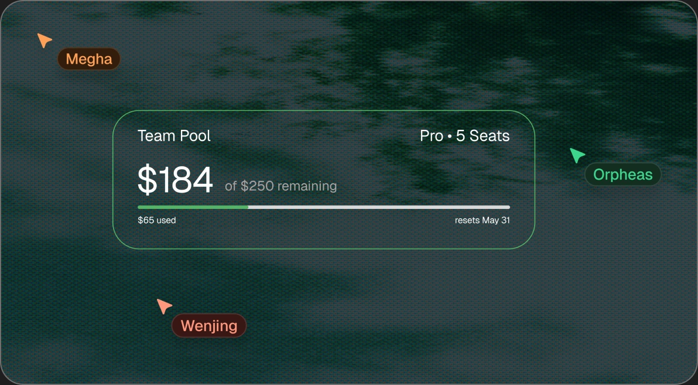
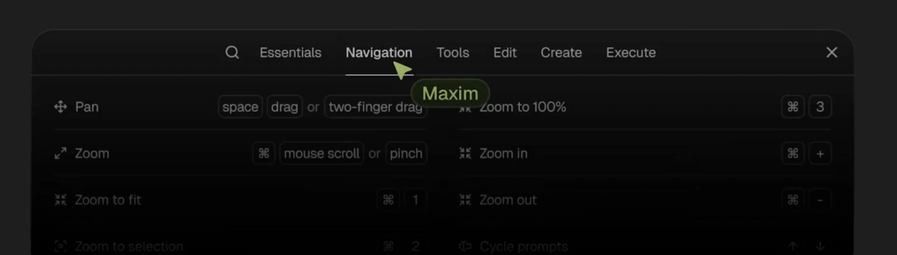

Features
I designed these pieces to show how creative teams navigate and work together in FLORA.

Canvas comments
I used a request to try a different model to show how feedback stays with the image being reviewed.

Sharing permissions
I showed the three access levels together so teams can see who can administer, edit, or view a project.

Team credits
I highlighted the remaining balance and reset date so teams can see what they have left before starting more work.

Canvas shortcuts
I focused on navigation commands such as Zoom to fit, which is especially useful when a canvas grows beyond the visible area.